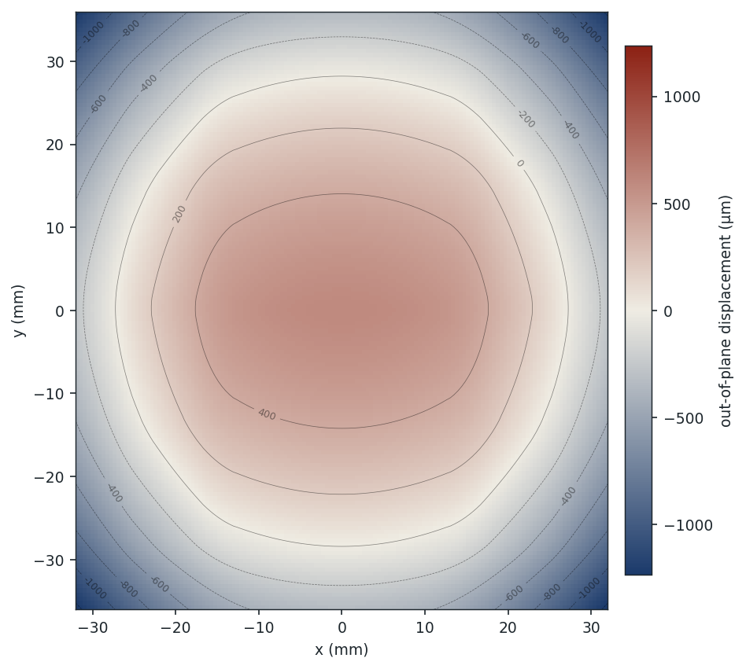
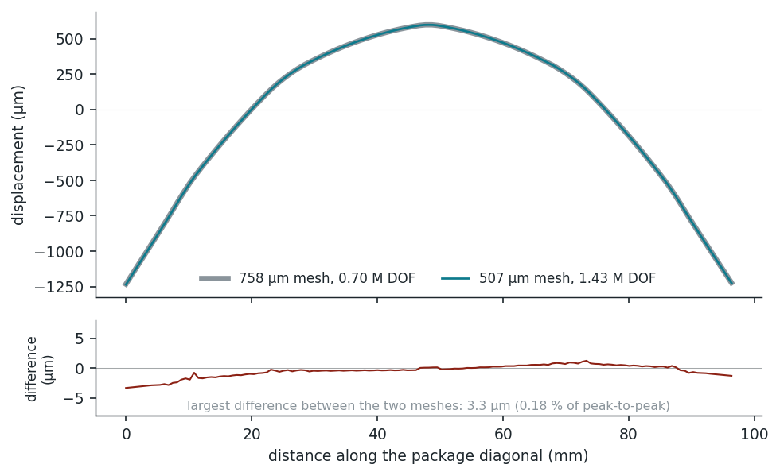

Method: numerical · detailed 3DPackage: AMD MI350-class acceleratorHardware: Apple M3 laptopSeries:WarpStack white papers
Abstract
Customers usually specify a mesh — 50 µm is the common number — but resolution is something you choose: it is an input, not a result, and no single run can tell you whether the one you picked was fine enough. The question that can be checked is whether the answer still moves when you refine. On a production-class AMD MI350-class accelerator package, peak-to-peak warpage moves 6.0 µm — 0.33% across a 2.25× refinement range, and the whole deflected field is unchanged to the width of a plotted line. A resolution that runs in 11 minutes on a laptop therefore already carries the answer a ~0.9 TB, day-long 50 µm solve would return. This paper reports the convergence evidence, the surface-by-surface agreement, and the projected cost of the fine mesh we did not need to solve.
The question worth asking
Does the answer still change when you refine?
Resolution is an input, not a result, and no single run can tell you whether the one you picked was fine enough. The question worth asking is the one you can actually check: does the answer still change when you refine? On the package below, it does not — which means a resolution you can afford already carries the answer a far finer one would give.
The floorplan as modelledEvery die, stack and mould region resolved as its own mechanical footprint — 273 of them.
Imported from a 3Dblox description and solved as a 3D solid, layer by layer, through the full thickness of the stack — no plate approximation and no smeared effective stiffness. Eight XCD compute dies, two I/O dies and eight twelve-high HBM3E stacks, cooled from assembly to operating temperature.
The warpage
Active surface · assembly to operating temperature
1834.0 µm

Out-of-plane displacement · µmA symmetric dome. The centre rises 597.9 µm and the corners fall 1236.1 µm — 1834.0 µm peak to peak.
The same answer at three resolutions
Refine it and watch
Three resolutions spanning a 2.25× range
spread 0.33%
Resolution
Degrees of freedom
Peak-to-peak
1143 µm
351,222
1828.0 µm
758 µm
703,230
1830.6 µm
507 µm
1,427,412
1834.0 µm
Spread across all three
4.1× the DOF
6.0 µm · 0.33%
Four times the degrees of freedom moves the answer by six microns on a package that bows by eighteen hundred. Counting everything — the spread above, the surface-by-surface agreement beside it, and the solver's own tolerances — total numerical uncertainty on this result is ±0.55%.
Not just the headline number
The whole surface, point by point
3.3 µm
Peak-to-peak warpage
1834.0 µm
Corners
−1236.1 µm
Centre
+597.9 µm
Largest point-by-point difference
3.3 µm · 0.18%
Total numerical uncertainty
±0.55%
A single peak-to-peak number could agree between two resolutions by coincidence. This is the whole field compared point by point along the package diagonal — the largest disagreement anywhere on the surface is 3.3 µm, less than a fifth of one percent of the bow.
Two resolutions, drawn on top of each other
Displacement along the package diagonal · 0.70 M and 1.43 M degrees of freedom
0.18% apart

758 µm mesh · 507 µm mesh · differenceTwo curves are plotted here, not one. Doubling the degrees of freedom leaves the deflected shape unchanged to the width of the line; the panel below shows the residual, which never exceeds 3.3 µm — 0.18% of peak-to-peak.
What the finer mesh would have cost
What this run cost
The reported result, end to end
11 minutes
Resolution
507 µm
Degrees of freedom
1.43 M
Peak memory
12.5 GB
Solve time
11 min
Hardware
Apple M3 laptop
Eight cores and 24 GB — a laptop, not a cluster. All three resolutions together cost under an hour.
What 50 µm would cost
Projected from the structure of the mesh — not solved
≈0.9 TB
Resolution
Degrees of freedom
Memory
338 µm
2.7 M
23 GB
225 µm
5.7 M
50 GB
150 µm
12.4 M
109 GB
100 µm
27.2 M
239 GB
67 µm
60.2 M
530 GB
50 µm
107 M
≈0.9 TB
A 50 µm mesh on this package is 75× the degrees of freedom of the run above and needs roughly 0.9 TB of memory; solve time scales at least with degrees of freedom, putting it on the order of a day. These rows are projections, not results — none of them was solved, because the evidence above says the answer they would return is already in hand.
What this buys you
Explore coarse, commit fine. Because the answer has stopped moving well above the resolution you were told to ask for, early design work can run at a resolution that costs minutes on a laptop instead of a day on a machine you would have to buy. You spend the fine-resolution budget once, late, on the localized region that actually needs it — rather than paying it on every candidate in a sweep. White paper No. 04 shows that step: 10 µm at the critical corners of this package in 5.4 minutes.
minutes, not daysa laptop, not a cluster±0.55% total numerical uncertaintythe whole field, not just peak-to-peak
Scope of this study. The model is a free package body: the board, the BGA layer, the lid and any stiffener are excluded, and it includes no moisture, no cure shrinkage and no gravity. Each of those stiffens a real assembly and reduces warpage. Material properties are library values for the material classes involved, not vendor data. Production parts of this class measure substantially lower; the 1834.0 µm above is a property of the model as specified and is not a prediction of shipping hardware. What transfers to your design is the method and its cost — the agreement across resolutions, and the price of the mesh you were about to pay for. AMD, Instinct and MI350 are trademarks of Advanced Micro Devices, Inc. NoveetyAI is not affiliated with, endorsed by, or sponsored by AMD, and this study was not produced in cooperation with AMD.